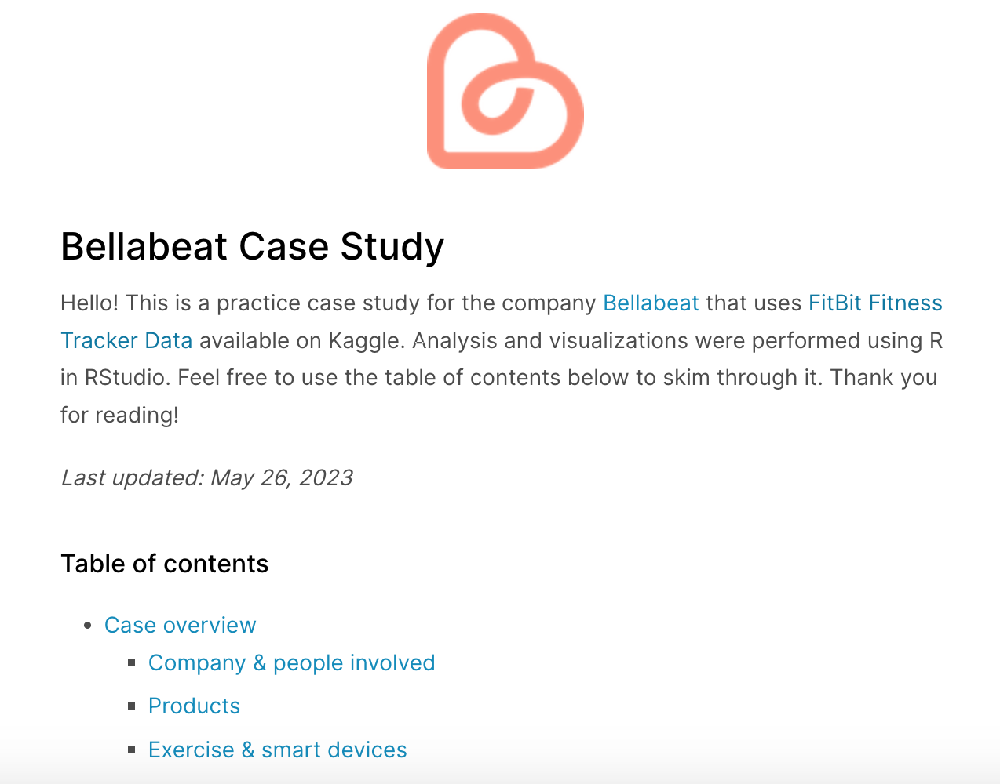
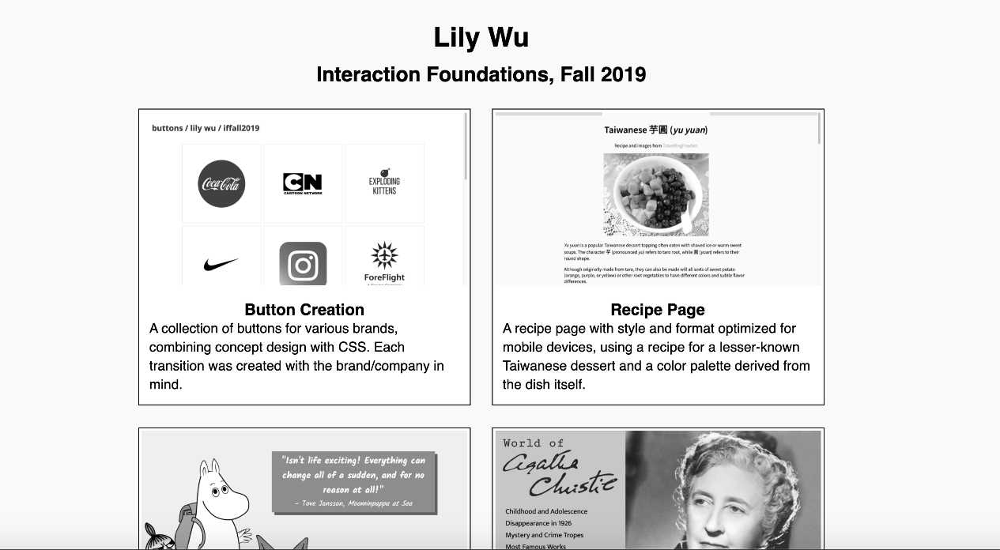

Website Design and Programming
Bellabeat Case Study
A capstone case study completed for the Google Data Analytics certificate.
Interaction Foundations
A portfolio of websites created for an Interaction Foundations art school course taken in the Fall of 2019.
Chords

A visual part of a final group project for Introduction to Digital Humanities exploring the chords and chord progressions of chart-topping pop and k-pop songs. Created Fall 2018.
Jackie Adams

A website first created in Fall 2017, regularly updated for author Jackie Adams.
Additional Website Work
My previous job in the Washington University Law School involved updating over 12 websites on WordPress and an ASP.NET content management system. I updated written/visual content and helped to transition sites to the school's new WordPress platform.
Lunar New Year Festival, Washington Univeresity Chemistry Tournament
I previously served as the Secretary/Webmaster and Director of Communciations for Lunar New Year Festival, which produces an annual performance to promote awareness of aspects of Asian culture and raise money for a local philanthropy organization. I also helped to update the website of Washington University Chemistry Tournament, of which I was a Co-Director and Budget & Fundraising Co-Chair.
Writing
- Kuniyoshi's Demons, Spring 2020
A senior capstone project completed for my Japanese Language & Culture major, exploring the use of supernatural beings in a collection of woodblock prints. - Wikipedia articles, Fall 2019
Two articles on fly species I wrote and published for an introductory ecology class, both featured on the daily Did you know ... section on the Wikipedia front page. - Articles for Student Life
Below are sample articles I wrote for from Washington University's Student-Run Newspaper, Student Life, from 2016-2017.
Design

A Facebook event cover for the Taiwanese Students Organization's first General Body Meeting in Spring 2020. (Digital drawing, type layout)
A Facebook event cover for Lock and Chain's spring book sale in 2018.
A previous cover photo for Washington University's Chinese Yoyo Club Facebook page. Image courtesy of the university's Lunar New Year Festival.